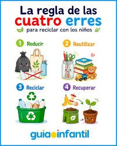
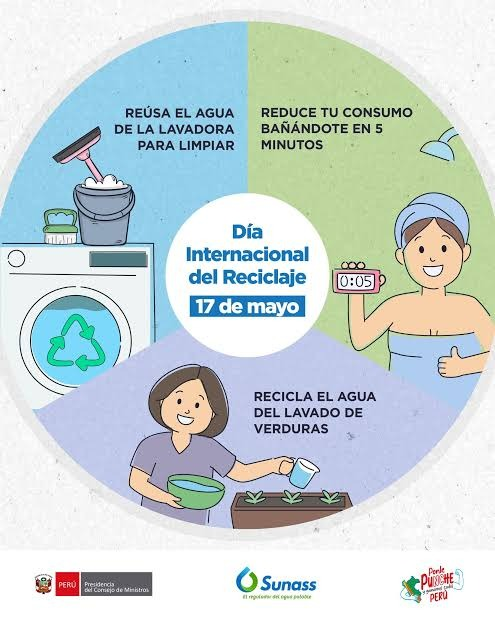
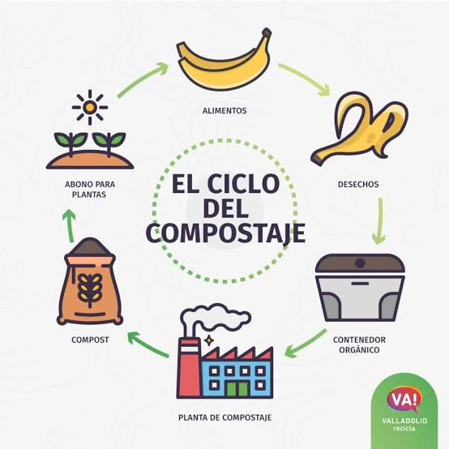

No reciclar es un gran problema que tenemos actualmente. La basura que tiranos no desaparece. Se acumula y termina afectando nuestra salud y entorno
Como todos sabemos, y en palabras simples, el reciclaje es el proceso de transformar materiales que ya no usamos en productos completamente nuevos. Piensa en una botella de plástico que te acabaste hoy. En lugar de terminar en la basura común, contaminando, ríos o enterrada en un vertedero durante cientos de años, la botella se recolecta, se procesa y se convierte en material nuevo para fabricar otra botella, una prenda de ropa o hasta una alfombra, porque reciclar es darle una segunda oportunidad a las cosas.
El reciclaje no es un evento único, sino una cadena de tres pasos continuos, si así queremos verlo de la Forma más simple, más fácil y más ordenada posible :
Todo empieza desde casa, la escuela o el trabajo. Consiste en clasificar los residuos según su tipo, ya sea plástico, papel, cartón, vidrio, metal orgánico y colocarlos en los contenedores correspondientes. Nos damos cuenta para qué es cada uno con sus debidas imágenes o también con sus colores, por ejemplo, el contenedor verde siempre se utiliza para residuos orgánicos.
Las grandes plantas de reciclaje reciben estos materiales, los limpian, los trituran o los funden mecánicamente para convertirlos nuevamente en materia prima pura.
Las fábricas usan esta materia prima recuperada para dar nuevos productos. El ciclo se completa cuando nosotros como consumidores elegimos comprar productos hechos con materiales reciclados, es simple : Se usa el producto, se termina de usar, se recolecta, se limpia, se transforma y se vuelve uno nuevo. Bastante fácil y simple de entender, verdad?.
El propósito principal del reciclaje es proteger nuestro planeta y garantizar un futuro más sostenible. Especialmente, busca ahorrar recursos naturales, reducir la contaminación para disminuir drásticamente, la cantidad de basura que termina en los océanos, ahorrar energía para procesar material ya existente, que consume mucho menos energía, al igual que el agua. En este proyecto, damos a entender lo importante que es el reciclaje como base para la transformación de productos que creemos “ que ya no sirven “ a productos nuevos, con propósitos diferentes en una ambiciosa y compleja solución.
Aunque la regla de las 3R (Reducir, Reutilizar, Reciclar) es la más famosa, el modelo actual se ha expandido a las 7R para atacar el problema de los residuos desde la raíz:
Rediseñar: Diseñar productos pensando en su vida útil y en que sean fáciles de reciclar.
Reducir: Consumir menos productos de un solo uso y evitar embalajes innecesarios
Reutilizar: Darle una segunda vida a los objetos antes de tirarlos a la basura.
Reparar: Arreglar las cosas cuando se rompen en lugar de comprar una nueva inmediatamente.
Renovar: Actualizar objetos viejos (como muebles o ropa) para que vuelvan a ser útiles.
Recuperar: Recoger materiales ya usados para introducirlos de nuevo en el ciclo.
Reciclar: Transformar el residuo en un objeto completamente nuevo cuando ninguna de las opciones anteriores es posible.
Ahorro de energía: Producir una lata de aluminio reciclado consume un 95% menos de energía que fabricar una desde cero utilizando bauxita. Conservación de recursos: Reciclar una tonelada de papel salva alrededor de 17 árboles, y ahorra miles de litros de agua. Alteración del cambio climático: Al reducir la necesidad de extraer y procesar recursos vírgenes, se reducen drásticamente las emisiones de gases de efecto invernadero a la atmósfera.


